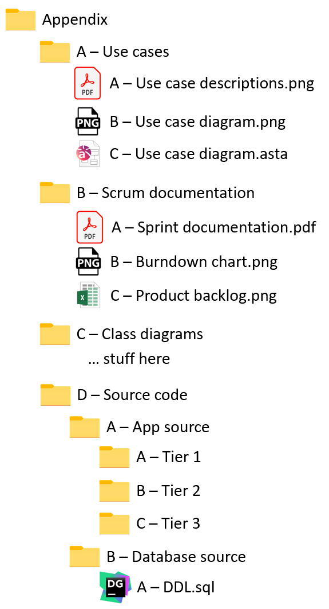

In SEP it's important to have a good appendix structure, so that the examiner can easily their way around, and don't have to play hide and seek with your documents.
I recommend the following:
Generally, all files must also be available as pdf, png, or svg.
So, what could it cook like?

Now, you can easily make references to your appendix, e.g. "Below you can see a use case description for how to add a new product. Other use case descriptions can be found in Appendix A.A"
If a folder ends up with many files, those can be divided into folders instead.
Maybe in your "B - Scrum documentation", you want sub-folders for each sprint, because each sprint has multiple files, like burn down chart, sprint backlog, meeting minutes.
Given that such folders would probably be called "Sprint X", they are easily identifiable, and may not need a pre-fixed ID, like "C - Sprint 3". Use your own judgement here.
It may still be easier to reference "Appendix B/C/A" instead of "Appendix B/C - Burn down chart".